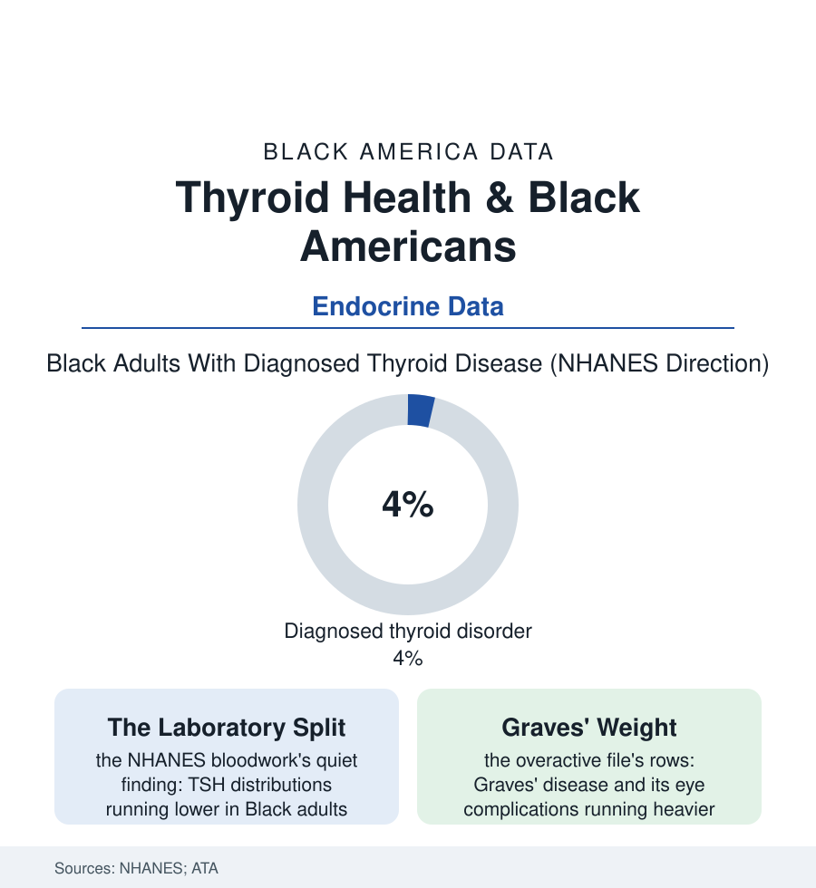

Black Public Health
The Butterfly Gland: Thyroid Disease in Black America
The thyroid's disorders split by race in the laboratory data — the underactive gland diagnosed less, the overactive more, and both masked by the two most misread complaints in medicine: tired and gaining, anxious and losing. The thyroid file.

The thyroid is a two-ounce gland with an empire: metabolism, temperature, heart rate, mood, weight — and a symptom list so nonspecific that its diseases hide inside the two most dismissed presentations in primary care, fatigue and weight change. In Black patients the laboratory data add a second puzzle: the gland's failures run in opposite directions from the textbook's. This article reads the thyroid file.
The Split in the Bloodwork
The NHANES laboratory panels — the rare dataset here that measures the blood rather than the diagnosis — establish the file's foundation: the thyroid-stimulating hormone's distribution running measurably lower in Black adults than in the reference populations on which the standard range was built, with the underactive gland's true prevalence (by the antibody and hormone rows) lower than the diagnosis rates of the white rows would predict, and the reference-range debate following in the endocrine literature in its proper scientific form — whether a single TSH line sorts populations whose distributions differ, the borderline cases by the millions assigned disease or health by the choice of a cutoff calibrated elsewhere. The overactive side runs the other way in the clinical data: Graves' disease — the autoimmune hyperthyroidism — diagnosed at higher rates in Black patients in the cohort studies, its orbitopathy (the eye disease, up to the threat of sight) running more severe in the Black rows of the ophthalmology series, the treatment rows (the antithyroid drugs, the radioactive iodine, the surgery) distributing through the specialty file's standard geography. The masking problem completes the clinical picture in the chart literature: the hyperthyroid patient's tremor and palpitations and weight loss read, in the rushed encounter, as the anxiety file's presentation — the population whose reports the pain file has already audited receiving, for a glandular disease with a blood test, the psychosomatic label — while the hypothyroid elder's slowing is filed under age, her TSH, when finally drawn, telling the gland's story years late. The file's discipline is the laboratory's: this is a condition the blood settles, and the blood, in the NHANES panels, was drawn. The gaps live downstream of the draw — in the test ordered or not, the range applied, the symptom believed.
The Treatment Rows and the Reference Fight
The management data repeat the section's patterns at endocrine scale: the endocrinology workforce's map (the specialty's deserts again), the levothyroxine rows (America's most prescribed drug class — its Black patients' dose-monitoring intervals in the claims data running longer, the TSH checks that titration requires arriving at the primary-care file's intervals), the surgical rows (the thyroidectomy's complication — the parathyroid's injury and the calcium crash — running, in the outcomes literature, higher for the low-volume surgeon to whom the access map assigns the Black patient, the volume-outcome file's endocrine chapter), and the pregnancy rows (the thyroid's role in the maternal file — the screening debates, the subclinical rows, the fetal stakes of the mother's untreated gland). The reference-range question stands as the file's scientific frontier, and the file records it as the honest kind of unsettled: the population-distribution studies are real, the clinical consequences of re-drawing the line are modeled rather than proven, and the endocrine societies' panels argue it in the open — the file noting only that the question could not even be asked until a survey drew blood from a representative nation and published the distributions by race, which is to say, until the data of this book's kind existed. The gland is small. Its file is the section in miniature: a measurable biology, a calibrated-elsewhere ruler, a symptom the system is trained to wave off, and a blood test — cheap, definitive, and ordered, in the claims data, at rates that still depend on whose fatigue is in the room.
Reading the Thyroid Data
The thyroid file is the health section's quietest gland and its cleanest parable: the test exists, the truth is in the tube, and the distance between the symptom and the draw is the whole disease. NHANES publishes the distributions. The charts — tired, gaining; anxious, losing — publish the delay, one waved-off visit at a time. The filled tube does not wave back.
More in Black Public Health
Hypertension Among Black Adults: Prevalence, Control, and Consequences
About 55 percent of Black adults have hypertension — the highest rate of any U.S. group. Prevalence, onset, control, and the stroke, heart, and kidney consequences in the data.
Diabetes Among Black Adults: Prevalence and Complications
Nearly one in five Black adults has diabetes, diagnosed or undiagnosed — and its complications fall with particular weight. The CDC data on prevalence, control, and outcomes.
Black Life Expectancy: The Gap at Birth and Its Causes
Black life expectancy at birth is about 73 years, roughly five years below the national figure — the summary measure of every health gap in this section. The CDC data.
Source: National Health and Nutrition Examination Survey thyroid data; American Thyroid Association research; JAMA and endocrine journal studies.